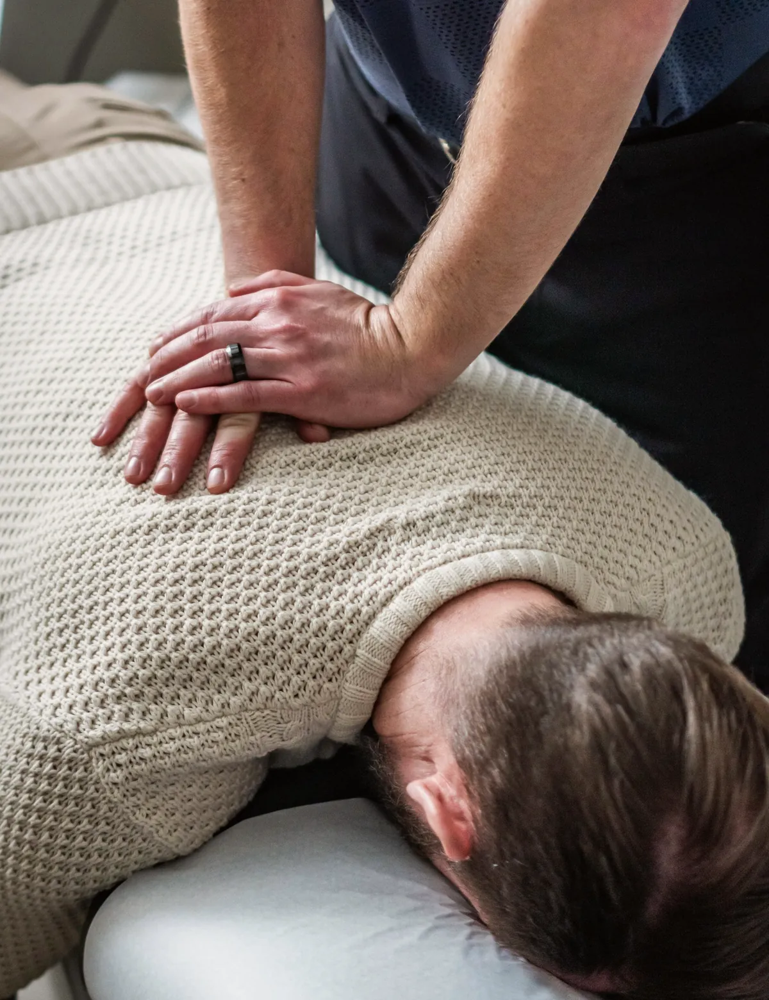
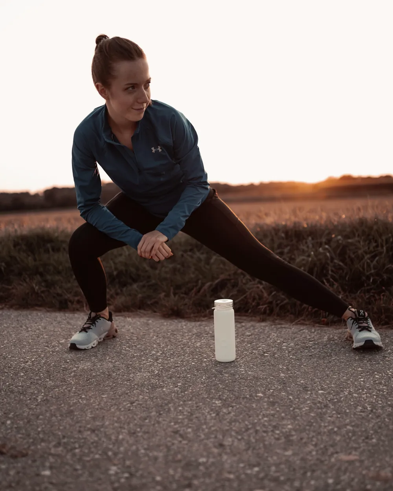

Fisioterapia e quiropraxia em Canoas
Dr. Maicon Eberhardt
Tratamento para a dor na coluna, no pescoço e nas articulações. Para voltar à rotina e à corrida sem dor, com tudo explicado com clareza, no Igara.
5,0 no Google · 77 avaliaçõesSegunda a sexta, das 8h às 19h30 Av. Armando Fajardo, 2083

01Tratamentos
Do pescoço ao tornozelo, com as mãos e com método
Cada atendimento começa entendendo a sua dor e a sua rotina. Depois vêm o tratamento e as orientações para seguir entre uma sessão e outra.
- 01
Quiropraxia
Ajustes precisos na coluna e nas articulações para aliviar a dor e devolver o movimento.
- 02
Coluna e dor cervical
Para a dor nas costas e no pescoço que não passa, inclusive quando outros tratamentos não resolveram.
- 03
Terapia manual
Técnicas feitas com as mãos para soltar tensões e recuperar a mobilidade.
- 04
Ombro, quadril e tornozelo
Reabilitação de dor no ombro, bursite no quadril e recuperação depois de fratura no tornozelo.
- 05
Fisioterapia para corredores
Tratamento e acompanhamento para voltar a correr sem dor, do treino de rua à meia maratona.
- 06
Fisioterapia
Avaliação, diagnóstico e um plano de tratamento explicado com clareza, sessão a sessão.

Plano mensal
Para quem quer manter o acompanhamento ao longo do mês. Pergunte como funciona.
Perguntar pelo WhatsAppQuiropraxia e terapia manual no Igara
Primeiro, entender a dor. Depois, voltar a se mexer.
02Avaliações no Google
Nota 5,0 em 77 avaliações
“Após seguir suas orientações e o acompanhamento necessário, hoje consigo correr mais de 10 km e sem dor!”
“Estava sofrendo com dor cervical, fui em outros profissionais, mas sem sucesso. Conheci o Maicon e ele resolveu meu problema.”
Carlos R.
“Explica tudo com clareza e transmite muita segurança durante o atendimento. Em poucas sessões já senti uma melhora incrível!”
Marta L.
“Tive uma fratura no tornozelo e resolveu meu problema antes mesmo do que o previsto.”
Alex N.
“Graças a ele, minha coluna agradece e eu também!”
Leonardo F.
“Qualidade mil no atendimento e cuidado. Ambiente confortável, além disso é atencioso e possui escuta ativa!”
Rubia R.
“Excelente profissional. O cuidado com o pós atendimento é fora do comum.”
Geovane F.
03Agendamento
Agende sua avaliação
O atendimento é com hora marcada. Conte pelo WhatsApp o que você está sentindo e combine o melhor horário.
- Estacionamento gratuito no local e na rua
- Entrada, assento e vaga acessíveis para cadeira de rodas
- Crédito, débito e pagamento por aproximação
- Espaço acolhedor e seguro para a comunidade LGBTQ+
Recado de quem fez esta página
Para o Dr. Maicon
Sou o Conrado Lemos, desenvolvedor aqui de Canoas. Montei esta página para mostrar como pode ficar o seu site. Tudo acima é o que o paciente veria.
- A nota, as 77 avaliações, os horários, o endereço e os tratamentos vieram do seu perfil no Google. Os trechos de avaliação estão como os pacientes escreveram.
- Todas as fotos são ilustrativas, de banco de imagens. Na versão final entram fotos profissionais suas, do consultório e dos atendimentos.
- Textos e tratamentos são revisados por você antes de o site ir ao ar.
R$ 1.000, com o site no ar em até 3 dias, no seu próprio domínio. O pagamento é só na entrega, depois da sua aprovação. O domínio é à parte, cerca de R$ 40 a R$ 55 por ano.
Gostou? É só responder a minha mensagem no WhatsApp.